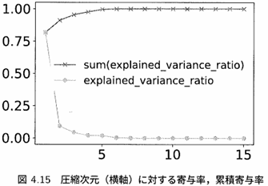
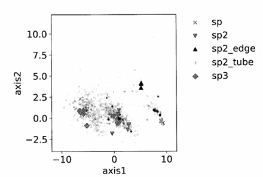
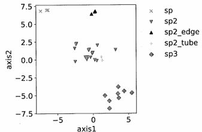
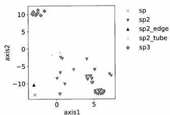
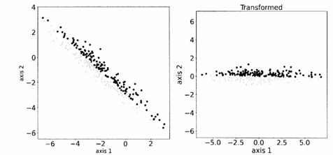
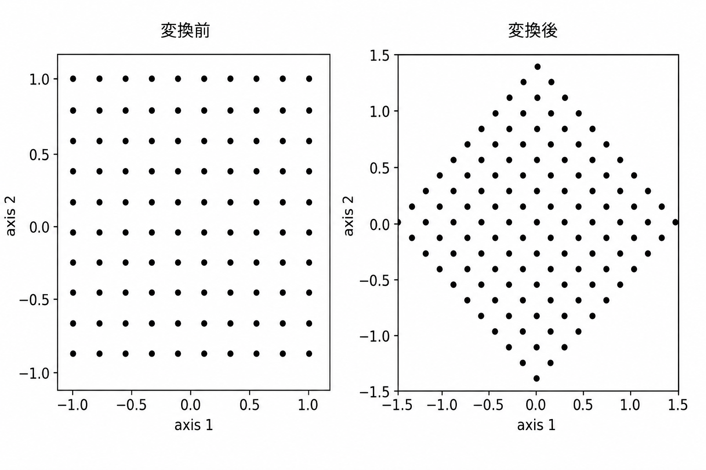

1. この章の目的
本章では15次元の説明変数を持ち、それぞれの変数が何を表すか理解の難しい炭素結晶構造データを 次元圧縮を用いて2次元へ変換し、データの特徴を可視化します。
次元圧縮法
- PCA（主成分分析）
- MDS（多次元尺度構成法）
- t-SNE
2. 使用データ
炭素原子環境データ
| 項目 | 値 |
|---|---|
| データ数 | 144 |
| 説明変数数 | 15 |
ラベル分類
| ラベル | 意味 |
|---|---|
| sp | sp結合 |
| sp2 | sp²結合 |
| sp2_edge | グラフェン端部 |
| sp2_tube | ナノチューブ |
| sp3 | sp³結合 |
これらのデータを読み込み、説明変数名カラム名、ラベルカラム名を設定し、StandardScalerを用いて標準化してから次元圧縮を行う。
3. PCA（主成分分析）
PCAはデータのばらつきが最も大きい方向を探し、 情報をできるだけ失わずに次元を削減する手法です。
PCAの特徴
- 線形な次元圧縮手法
- 情報量（分散）を最大限保持する
- 計算が高速
- 結果の解釈が比較的しやすい
図4.15 寄与率と累積寄与率
from sklearn.decomposition import PCA
ndim = X.shape[1]
pca = PCA(ndim)
pca.fit(X)
indx = [i for i in range(
1,
len(pca.explained_variance_ratio_)+1
)]
pcasum = [
np.sum(
pca.explained_variance_ratio_[:i]
)
for i in range(
len(pca.explained_variance_ratio_)
)
]
- 第1主成分：約80%
- 第2主成分まで：約90%

2つの主成分だけで元の15次元データの大部分を説明できます。
図4.16 PCAによる可視化
ndim = 2
pca = PCA(ndim)
pca.fit(X)
X_rd = pca.transform(X)
X_rd_new = pca.transform(X_new)
from dimerd_misc import scatterplot_rd
scatterplot_rd(
X_rd,
df_obs[SPLABEL].values,
X_rd_new
)
コード解説
-
PCA(n_components=2)
15次元のデータを2次元へ圧縮するPCAモデルを作成します。 -
fit(X)
データの分散構造を学習し、 主成分軸を求めます。 -
transform(X)
元の15次元データを 主成分空間へ変換します。 -
X_rd
圧縮後の2次元データです。

第1主成分と第2主成分を用いて 15次元データを2次元に変換した結果です。
sp3、sp2、sp2_tubeなどのグループが ある程度まとまって見えます。
4. MDS（多次元尺度構成法）
MDSは元の高次元空間における データ同士の距離をできるだけ保存しながら 低次元化する方法です。
MDSの特徴
- データ間距離を保存する
- 類似データが近くに配置される
- PCAより柔軟な可視化が可能
- 計算量はPCAより大きい
from sklearn.manifold import MDS
mds = MDS(ndim, random_state=1)
X_mds = mds.fit_transform(X)
scatterplot_rd(
X_mds,
df_obs[SPLABEL].values
)
コード解説
-
MDS()
MDSモデルを作成します。 -
n_components=2
2次元へ圧縮します。 -
random_state=1
乱数を固定し、 毎回同じ結果になるようにします。 -
fit_transform(X)
学習と次元圧縮を同時に行います。 -
X_mds
MDSで変換された2次元座標です。
図4.17 MDS結果

距離の近いデータは近くに配置されます。 ランダムシードによって見え方が多少変化します。
5. t-SNE
t-SNEはクラスタ構造の発見が得意な 非線形次元圧縮手法です。
近傍データの関係を重視して 低次元へ変換します。
t-SNEの特徴
- クラスタ分離が得意
- perplexityに依存する
- 結果が変わりやすい
from sklearn.manifold import TSNE
tsne = TSNE(
n_components=2,
perplexity=30,
random_state=1
)
X_tsne = tsne.fit_transform(X)
scatterplot_rd(
X_tsne,
df_obs[SPLABEL].values
)
コード解説
-
TSNE()
t-SNEモデルを作成します。 -
n_components=2
2次元へ圧縮します。 -
perplexity=30
近傍データをどの程度重視するかを決めるパラメータです。 -
random_state=1
乱数シードを固定して再現性を確保します。 -
fit_transform()
学習と次元圧縮を同時に実行します。
図4.18 t-SNE結果

6. PCA演習問題
問題内容
- データを散布図表示する
- PCAを適用する
- 変換後を可視化する
- 目的変数との関係を考察する
図4.19

PCA後の短軸方向に 目的変数yの変化が現れている例です。
重要ポイント
寄与率が大きい主成分が、 必ずしも予測に重要とは限りません。
7. PCA利用時の注意点
図4.20

元の説明変数（x1, x2）には物理的意味がありますが、 PCAで作られた主成分軸には 必ずしも明確な意味がありません。
結論
PCAはデータ圧縮には便利ですが、 圧縮後の軸の解釈には注意が必要です。
8. まとめ
| 手法 | 特徴 |
|---|---|
| PCA | 情報量を保ちながら圧縮 |
| MDS | 距離関係を保存 |
| t-SNE | クラスタ発見が得意 |
高次元データを2次元へ変換することで、 データの構造や特徴を視覚的に理解できます。